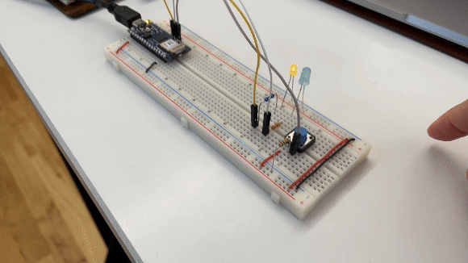
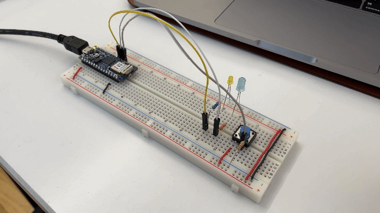
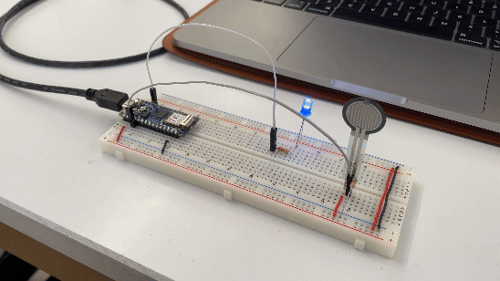

This week's lab covered quite a few subjects:
- How to connect digital input and output
- How to utilize code to alter input and output
- Connecting analog sensors with a microcontroller to extract sensor range with code
- Different ways to use sensors and produce interesting output
lab activity 1: programming analog switches
The first exercise was to wire up two LEDs to a switch and program the switch to alternate the LED states when the switch is open or closed.

In effort to better understand the code, I changed the LED output to both turn on when the switch is closed (pressed).

Question: Why does the digital input wire go to the ground side of the switch rather than the power side? If the circuit is effectively a loop, wouldn't the placement of the wire affect the timing of reading rather than the overall functionality of the switch?
lab activity 2: audio output
My first attempt was to simply remove the yellow LED and plug the speaker into the respective power and ground connection points and alter the code. But it did not work. Here is what I did to troubleshoot.
- I opened an example program in the Arduino IDE and confirmed that the circuit was not the issue as the speaker began to produce noise.
- The next step was to troubleshoot the code, and kept the LED for a visual indicator of switch
state changes.
- Tried turning the speakers on and off with code by running
noTone()when the switch was open andtone()when it was closed. - this did not produce any change in speaker output. - Wondered if
pinMode()was the issue. Commented outpinMode(8, OUTPUT)from the setup function. - this did not produce any change in speaker output, either. - learned about
delay(). After talking with Nasif, he suggested that I try adding a slight delay after eachtone()function. Below is the documentation before and after addingdelay(100)to each switch state tone output.void setup() { pinMode(2, INPUT); // set the pushbutton pin to be an input pinMode(3, OUTPUT); // set the blue LED to be an output pinMode(8, OUTPUT); // set the speaker to be an output } void loop() { // read the pushbutton input: if (digitalRead(2) == HIGH) { // if the pushbutton is closed: digitalWrite(3, LOW); // turn off the blue LED tone(8, 440); // play the speaker at 440 Hz delay(100); // not sure this line is needed } else { // if the switch is open: digitalWrite(3, HIGH); // turn on the blue LED tone(8, 392); // play the speaker at 392 Hz delay(100); // not sure why this makes it work } }
- Tried turning the speakers on and off with code by running
Question: I am still confused as to why delay(100) was needed after
tone().
I understand the delay can control the duration of tone output, but in my case, I just want the speaker
to continously produce sound and only change the frequency depending on the switch state.
Another confusing aspect is, another classmate was able to produce tone output without the delay. Our
circuits were exactly the same, except she was using an Arduino Uno while I was using
the Arduino Nano 33 IoT that came in the pcomp kit. Could there be a difference in the
microcontroller
that affects the
necessary code?
lab activity 3: force sensitive resistors
Another component we experimented with was the force sensitive resistor (FSR). By mapping the analog value from the FSR to the LED brightness output, we could create a pressure-sensitive LED dimmer.

const int ledPin = 9; // pin that the LED is attached to
int sensorValue = 0; // value read from the pot
void setup() {
// initialize serial communications at 9600 bps:
Serial.begin(9600);
// declare the led pin as an output:
pinMode(ledPin, OUTPUT);
}
void loop() {
sensorValue = analogRead(A0); // read the pot value
// map the sensor value from the input range (400 - 900, for example)
//to the output range (0-255):
int brightness = map(sensorValue, 400, 900, 0, 255);
analogWrite(ledPin, brightness); // set the LED brightness with the result
Serial.println(sensorValue); // print the sensor value back to the serial
}
This exercise reminded me a lot of Devan's switch from last week - by applying pressure you could reveal different information based on the level of illumination. This also got me thinking beyond pressure and distance based variables. What if an interaction was based on the time someone spends engaged - If someone spends more time standing in front of a sensor, the output becomes clearer, or perhaps more complex?
creative output: further developing last week's switch
After Yeseul mentioned that my switch was an exposed potentiometer, I decided to leverage that feature and create a varied audible output. Here are the steps that I took:
- Solder wires to the speakers and LED. Last week I struggled a lot to maintain consistent connection with the copper tape, so I prioritized reliable connections to save a lot of headache down the road.
- Using some code to test and make sure the speaker and LED are still connected to the switch. Here
are some discoveries:
- The LED does not produce output as pronounced as the speaker. This may be due to the environment - the architectural lighting may be interfering with the LED's visibility.
Serial.println()was absolutely pivotal in debugging and identifying the viable input range. The further away from the LED, the more resistance in the circuit and the less consistent the readings were. At times there were no readings at all, meaning there are some "dead spots" on the labyrinth pattern.- The copper tape from last week was getting scratched up so I retaped the copper tape path to ensure better contact. This also produced a new set of readings, which meant I needed to update the mapped input range based on the console log data.
- The input values that is being mapped matter, and
constrain()can help manage the readings more effectively. before constraining the inputs, I was not getting any serial print readings in the console log. After constraining the input readings, the outputs became more consistent.
const int speakerPin = 8; // pin that the speaker is attached to
const int ledPin = 7; // pin that the LED is attached to
void setup() {
Serial.begin(9600);
pinMode(A0, INPUT); // set A0 as input
pinMode(speakerPin, OUTPUT); // set the speaker to be an output
pinMode(ledPin, OUTPUT); // set the LED to be an output
}
void loop() {
if (analogRead(A0) < 50) {
noTone(speakerPin);
analogWrite(ledPin, LOW);
} else {
int analogValue = analogRead(A0);
Serial.println(analogValue);
int Sound = map(constrain(analogValue, 700, 1024), 700, 1024, 400, 900);
tone(speakerPin, Sound);
delay(100);
int brightness = map(constrain(analogValue, 800, 1024), 800, 1024, 0, 255);
analogWrite(ledPin, brightness);
}
}The result is a sound oscillator that creates more fluctuation the further you get from the "origin point". Ultimately, this project met the loose objective of "producing a varied sound output based on the change in input".
A sidebar reflection: I seem to find inspiration and possibilty for a project in the technical
information I know, whereas some folks in our cohort start with a potential interaction in mind before
seeking out the necessary information. Of course, there is no one better way, but I can't help but
wonder if my approach limits the creative output due to the lack of technical knowledge I have.
What can I do to think more unconventionally and beyond the scope that I am already within?